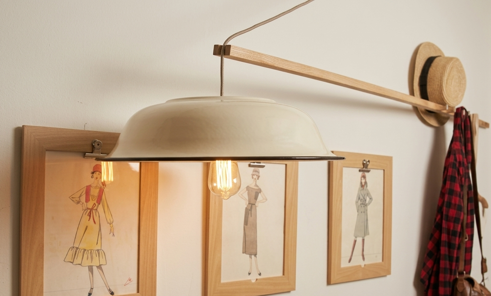

Selected work
Research
Architecture
Objects

Research + Design · Thesis
NKDT — student housing against loneliness
Survey of 200+ students, GIS typology mapping, and three buildable housing types derived from the findings.

Objects · 2024
Drift Series
Light sculptures from driftwood and weathered steel.

Built · 2023
Shade Field
Timber-and-sail canopy raised by hand in a campus courtyard.

Objects · Craft
Gold ring, carved
Lost-wax goldsmithing — design at the smallest scale.

Urban fixture
Petach Tikva fixture
Street-scale design detail for the public realm.